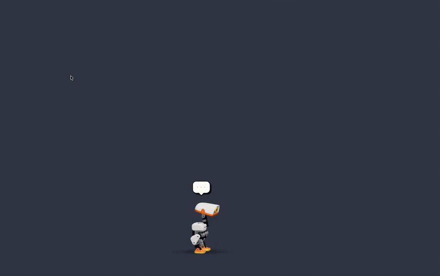

It walks along the bottom of your screen, climbs your windows, falls over, gets back up, and talks back. Free and open source.
macOS 12 or later · Apple Silicon and Intel · Unofficial, inspired by Pollen's Microduck

Wanders the bottom of the screen and looks up when your cursor comes near. Clicks go straight through to your apps.
The top of every window is a ledge. It hops up, rides along when you drag, and falls when you close it.
Pick it up and drop it. It tumbles and stands up on its own, the way the real robot does.
Click it and chat. It answers in a speech bubble and out loud, and does what you ask: sit, dance, roller skates, beach ball, a five minute nap.
Off by default. Turn on a level in Settings and it can open apps and links, look things up, or run anything Claude Code can.
Gets tired and naps, gets bored and asks for attention, sulks if ignored, likes being petted. Dances when music plays.
Chat runs through Claude: your Claude Code CLI if it is installed, or an Anthropic API key. Without either it still walks, climbs and plays. It just can't talk back.
No accounts, no analytics, no telemetry. By default it runs nothing on your Mac. What it reads and what it sends is spelled out in the README.
Under the feathers it is Pollen Robotics' Microduck: their MuJoCo model and their trained walking policies, from the open source Microduck simulator by Pollen Robotics and Hugging Face. Every step is a trained robot policy driving a physics simulation.
Digital Duck is an independent project. It is not affiliated with or endorsed by Pollen Robotics or Hugging Face. If you like the duck, get the real one.